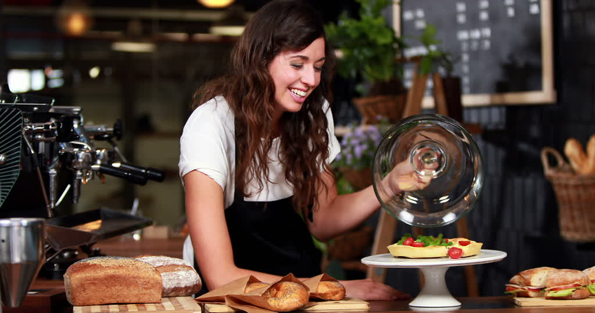

Café Las Horas ha sido pensado para convertirse en un lugar tranquilo, relajado y discreto. Precisamente por ello se ha confiado el proyecto a la esposa de Romain Fornell, Emma, que ha conseguido crear un ambiente muy acogedor, donde el cliente se sienta como en casa. Un espacio cálido y confortable pensado para personas de buen paladar pero que disponen, a veces, de poco tiempo para disfrutar de una cocina donde la calidad y esencia del producto son imprescindibles.
La planta que acoge el restaurante tiene tres espacios diferenciados, un primero en la entrada que funciona como terraza, seguido de la barra y un tercero donde está situado el comedor que se divide en dos por unas columnas. Cuenta además con una barra de ostras, y se ha destinado un espacio al fondo como pequeña boulangerie. Café Las Horas tiene una capacidad para 100 comensales y cuenta con un equipo formado por 14 personas.
Premios Obtenidos
| 2017 | Premio a la mejor Paella | Premio al mejor desayuno |
|---|---|---|
| 2018 | Mejor desayuno Tripadvisor | Mejor chocolate de Valencia |
Actividades durante este mes
| Miércoles | Tertulía libros Perez Reverte |
|---|---|
| Jueves | Desayuna con el alcalde |
| Viernes | Tardes de baile de salón |
| Charlas de introducción a la preparación de cocktails (durante todos los días) | |
